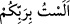

kadirdir.
“Allah: Ey Meryem oğlu Îsâ! İnsanlara Allah’ı bırakıp da beni ve anamı iki ilah
edinin”, diye sen mi dedin? buyurduğu zaman” Yani, “Ey Muhammed, âhirette Hz. Îsâ
herkesin huzurunda kulluğunu ikrar edince ve ümmetine de Allah’a kulluk etmelerini
emrettiğini ifade edince Allah Teâlâ’nın kâfirleri azarlamak ve paylamak için şöyle
diyeceği vakti hatırlat:
“Ey İsâ! Allah’ın ilahlığını ve mâbûdiyyetini bir tarafa bırakın ve benimle annemi ilah
hâline getirin, diye sen mi dedin?” Maksat o ikisini Allah Teâlâ’ya ortak koşmalarıdır.
Tıpkı “İnsanlardan bazıları, Allah’tan başkasını O’na denk tanrılar edinir...” (el-
Bakara, 2/165) âyetinde olduğu gibi. Çünkü onlardan hiçbirisi, Allah Teâlâ’nın
ilahlığını red ve inkar ederek Hz. Îsâ ve Hz. Meryem’in ilah olduklarını söylememiştir.
Burada esas gaye, sözün bizzat kendisinin reddedilmesi değil, bu sözü söyleyeni
azarlamaktır.
Ebüssuûd Efendi (rh.a.) şöyle demiştir: Bu âyette vurgulanmak istenen şey, bu sözün
söylendiğinin kesin olarak bilindiği ve sorunun sözün sahibini tesbit için olduğu hususu
değildir. Gerçi yaygın kullanım bu şekildedir. Nitekim“Bunu ilahlarımıza sen mi
yaptın?” (el-Enbiya, 21/62) âyeti ve benzerleri bu anlamı taşımaktadır. Burada durum
farklıdır. Kesin olarak bilinen şey Hz. Îsâ ve annesinin ilah edinilmeleridir. Soru ise
bunun Hz. Îsâ’nın emriyle mi, yoksa kendileri tarafından mı olduğunu belirlemek içindir.
Tıpkı “Bu kullarımı siz mi saptırdınız, yoksa kendi kendilerine mi yoldan çıktılar.”
(el-Furkan, 25/17) âyetinde olduğu gibi.
et-Te’vîlâtü’n-Necmiyye’de denilmektedir ki: “Sorudan sonra gelen müsbet cümle
menfî anlam verir. Sorudan sonra gelen menfî cümle ise müsbet anlam verir. Mesela “
” “Ben sizin Rabb’iniz değil miyim?” (el-A’râf, 7/172) sorusu “Ben sizin
Rabb’inizim” demek olup manası olumludur. Diğerine misal ise “
” “Allah’la
beraber başka bir ilah da mı var?” (en-Neml, 27/60, 61, 62, 63, 64) sorusu “Allah’la
beraber başka hiçbir ilah yoktur.” demek olup mânâsı olumsuzdur.
Buna göre âyetin mânâsı şöyledir: Sen onlara, “Allah’ı bırakıp beni ve annemi ilah
edinin” demedin. Fakat onlar cehaletleri yüzünden sana saygıda aşırı gittiler. Sana
sende olmayan farklı sıfatlar ithaf ettiler ve seni övmede haddi aştılar.
Nitekim bu sebeple Hz. Muhammed (s.a.): “Hristiyanların Meryem oğlu Îsâ’ya
yaptıkları gibi, siz de bana taşımadığım sıfatları yakıştırmayın, beni övmede haddi
aşmayın!”[75] buyurmuştur.” et’Tevîlâtü’n-Necmiyye’den yapılan nakil burada bitti.
“Madem ki Allah Teâlâ, Hz. Îsâ (a.s.)’ın bu sözü söylemediğini biliyor, ona böyle bir
soru sormasının mânâsı nedir?” denilirse şöyle cevap verilir: Bu, kavminin kınanması
ve böyle bir sözün ne kadar büyük bir vebal olduğunun belirtilmesi içindir.
Ebû Ravk şöyle demiştir: “Hz. Îsâ bu hitâbı duyunca, bütün mafsalları sarsılır ve